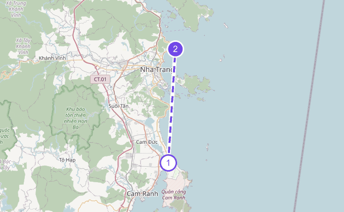
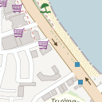
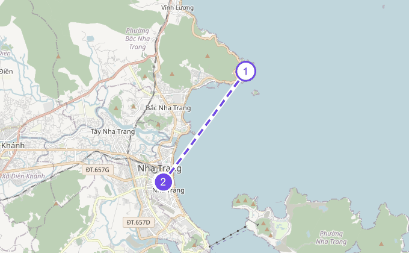
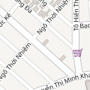
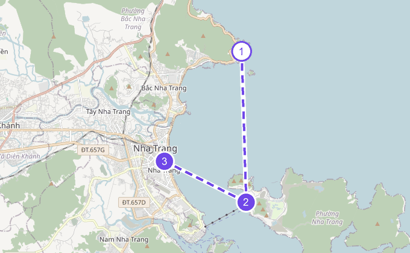
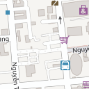
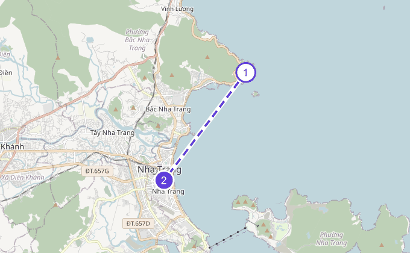
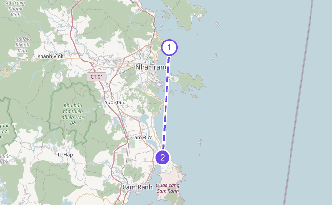

06:50
한국 시각
확정
인천공항 T1 출발 — 영락네
- 편명
- 베트남항공 VN441
- 비행시간
- 4시간 55분
우리 가족 여행 가이드
2026년 10월 15일 – 20일 · 성인 4, 유아 2
빌라 르 코라이 (Villa Le Corail, A Gran Meliá)
Bãi Tiên, Đường Đệ, Bắc Nha Trang, Khánh Hòa, Vietnam 지도 보기
10월 15일 체크인 · 10월 19일 체크아웃 (4박)
영락네가 10월 15일 목요일에 하루 먼저 도착하고, 영두네가 다음 날인 16일 금요일에 합류해요. 돌아오는 19일 밤 비행기는 두 가족이 함께 탑니다.
이 날은 장소가 등록된 일정이 없어 지도가 없어요. 시간표에서 일정을 확인하세요.
맛집 목록을 아직 내려받지 못했어요. 인터넷에 연결한 뒤 다시 열어 주세요.
여행 정보를 아직 내려받지 못했어요. 인터넷에 연결한 뒤 다시 열어 주세요.
영락네 도착, 리조트 적응
새벽 비행기라 이른 아침에 움직여요. 도착해서 무리하지 않고 리조트에 자리를 잡는 게 목표예요.
10:30 출발 → 11:30 도착

그랩과 일반 택시에는 카시트가 없어요. 시속 80km로 달리는 해안도로를 한 시간 가까이 가는 길이라, 카시트를 실어 주는 차를 미리 예약해 두는 편이 안전해요.
얼리 체크인이 되면 빌라에 짐을 풀고, 안 되면 로비에 맡긴 뒤 자리에 앉아요. 수영장 옆 살 풀바에서 가볍게 먹어도 좋아요.
나투라 (Natura) 현장 가이드 보기얼리 체크인이 되면 바로 빌라에 들어가 지우를 낮잠 재워요. 안 되면 로비에 짐을 맡기고 살 풀바에서 음료를 마시거나 2층 키즈클럽을 둘러보며 기다려요.
긴 이동 뒤라 무리하지 않고 가볍게 놀아요.
일미오
02 Phạm Văn Đồng, Bắc Nha Trang, Nha Trang, Khánh Hòa 외 2개 지점
매일 10:00–22:00구글 07/27 확인

새벽 비행과 긴 이동으로 지친 날이라 빌라에서 편하게 먹어요. 우리 리조트까지 실제로 온 후기가 있는 곳이라 첫날에 안전해요. 아이들이 낯가림 없이 잘 먹는 메뉴예요.
영두네 합류, 리조트
영두네가 합류하는 날이에요. 오전은 영락네가 리조트에서 쉬고, 영두네가 도착하는 정오쯤 다 같이 모여요.
영두네 동선

영락네 동선
영두네가 오는 동안 아이들과 놀아요. 2층 키즈클럽도 둘러봐요.
은솔이가 무릎에 앉은 채로 고속 해안도로를 한 시간 가까이 가는 구간이에요. 카시트를 실어 주는 차를 미리 예약해 두세요.
영두네가 도착하기 전에 가볍게 먹어요.
나투라 (Natura) 현장 가이드 보기영두네는 아직 체크인 전이라 로비에 짐을 맡기고 만나요.
새벽부터 움직여 리조트에 막 도착한 참이라, 짐을 맡기자마자 리조트 안에서 먼저 먹어요. 즉석 쌀국수와 계란은 은솔이도 잘 먹어요.
새벽 비행기로 온 날이라 방에 들어가자마자 재워요. 저녁에 시내로 나가려면 이 시간이 꼭 있어야 해요.
마담프엉
34F Nguyễn Thiện Thuật, Tân Lập, Nha Trang, Khánh Hòa
매일 11:00–22:00구글 07/27 확인

영두네가 합류한 날이라 시내로 나가 함께 먹어요. 쌀국수와 볶음밥처럼 아이들이 먹기 순한 메뉴가 많고 반주로 맥주 한잔 곁들이기 좋아요.
영락네는 빈원더스, 영두네는 리조트
두 가족이 따로 보내는 날이에요. 영락네는 아침 일찍 나서서 빈원더스에서 종일 놀다 시내에서 저녁을 먹고 들어오고, 영두네는 리조트에 남아 은솔이 낮잠 리듬을 지켜요.
영락네 동선

빈원더스로 일찍 나서는 날이라 문 여는 시각에 맞춰 먹어요.
나투라 (Natura) 현장 가이드 보기08:00 출발 → 08:35 도착
영락네가 나선 뒤 서두르지 않고 먹어요. 즉석 쌀국수와 계란은 은솔이도 잘 먹어요.
나투라 (Natura) 현장 가이드 보기케이블카를 타고 혼째 섬으로 들어가요. 오전에는 동물 먹이주기와 버드쇼, 아쿠아리움을 보고 낮에는 물놀이를 해요.
2024년에는 10월 15일부터 11월 15일까지 케이블카가 정기점검으로 쉬었어요. 우리 여행 주와 그대로 겹치는 기간이에요.
티켓
성인 2명 종일권 약 210만 동
지우가 100cm를 넘으면 아동 요금 약 80만 동이 더해질 수 있어요 · 성인 2명 약 11만 5천 원
예매는 이렇게
온라인 예매가 현장가보다 크게 싸지는 않지만, QR 코드로 매표 줄 없이 바로 들어가는 게 가장 큰 이점이에요.
아쿠아리움
에어컨이 시원해 한낮 더위나 소나기를 피하기 좋아요. 유리 터널과 인어쇼, 다이버 물고기 먹이주기를 볼 수 있어요.
지우 낮잠은 이렇게
종일 코스라 낮잠은 이동하는 차 안이나 실내 카페에서 안고 재워요. 유모차를 빌려 두면 잠든 아이를 눕히기 좋아요.
챙겨 갈 것
500ml 이하 생수와 시판 간식은 들고 들어갈 수 있어요. 물놀이용 수영기저귀와 수건도 챙기세요.
섬 안 점심
한 번 들어오면 나가서 먹기 어려워요. 코랄 뷔페가 밥과 면, 과일이 두루 있어 지우가 먹기에 무난해요.
21개월은 물에 오래 있으면 금세 지치니, 삼십 분쯤 놀고 그늘에서 쉬기를 번갈아 하면 좋아요. 파도가 잔잔하면 바다에도 나가 봐요.
은솔이 낮잠 전에 미리 먹어요. 수영장 옆 살 풀 바는 낮 열두 시부터 열어요.
나투라 (Natura) 현장 가이드 보기지우가 지치기 전에 섬 안에서 해결해요. 오후 1시 전에 앉는 게 좋아요.
두 시간쯤 자는 동안 어른들은 번갈아 테라스에서 쉬어요. 낮의 로비 테이아는 커피와 디저트 라운지라 한 사람씩 다녀오기 좋아요.
낮잠에서 깨면 2층에 올라가 놀아요. 해가 누그러지면 모래놀이를 해도 좋아요.
물놀이를 마치고 시내 식당가로 향해요.
목식당 (하이산 목꽌)
74-76 Đường Hồng Bàng, Tân Lập, Nha Trang, Khánh Hòa
매일 08:00–22:00구글 07/27 확인

섬에서 나오는 길이 식당가와 이어져요. 리조트로 바로 돌아가지 않고 들러서 먹고 들어가요. 이번 여행에 한 번은 랍스터를 이렇게 챙겨요.
은솔이 잘 시간이 일러 어른들도 함께 일찍 먹어요.
종일 논 날이라 일찍 재워요. 재운 뒤 어른들은 테라스에서 룸서비스로 조용한 저녁을 즐겨도 좋아요.
지우가 차에서 잠들면 그대로 빌라로 옮겨 재워요.
리조트에서 쉬는 날
리조트에서 여유롭게 보내는 날이에요. 날씨를 보고 빈원더스와 순서를 바꿔도 돼요.

파도가 있는 바다보다 빌라 풀이 아이들에게 안전해요.
리조트에서 쉬는 날이라 멀리 나가지 않아요. 수영장 옆 살 풀 바도 이 시간에는 열려 있어요.
나투라 (Natura) 현장 가이드 보기리조트에서 쉬는 날이라 낮잠 시간을 온전히 지켜요. 어른들은 번갈아 테라스에서 쉬어요.
은솔이가 자는 동안 지우가 2층에서 놀아요. 오전에는 만들기 놀이가 있어요.
어른들이 한 사람씩 번갈아 다녀와요.
에어컨이 시원한 대형 가든형 식당이라 여섯 명이 나눠 먹기 좋아요. 반주로 맥주 한잔 곁들이기 좋아요.
마지막 날, 밤 비행기로 출국
예약에 들어 있는 무료 레이트 체크아웃으로 오후 6시까지 빌라를 씁니다. 짐을 맡기고 떠도는 시간 없이 마지막까지 리조트에서 보내다 밤 비행기를 타요.
식사 뒤에도 빌라에서 쉬었다 나올 수 있어요.
나투라 (Natura) 현장 가이드 보기오후 6시까지 방을 그대로 쓸 수 있어서, 짐을 맡기지 않고 물놀이를 마지막까지 이어가요.
밤 아홉 시 반 비행기라 잠들기까지 아주 긴 하루예요. 이 시간에 재워 두면 공항과 기내에서 훨씬 수월해요.
주문하고 받기까지 30~45분 걸리니 3시 반쯤 미리 시켜 두면 시간이 딱 맞아요.
인빌라 다이닝 (룸서비스·플로팅 조식·프라이빗 BBQ) 현장 가이드 보기18:00 출발 → 19:10 도착

돌아가는 길도 한 시간 넘게 해안도로를 달려요. 올 때 탄 카시트 차량을 왕복으로 함께 예약해 두세요.
인천 도착
새벽에 인천에 내리는 날이에요. 공항철도 첫차를 기다렸다 움직이게 되니 서두르지 않아도 돼요.
고생 많으셨어요. 입국 심사와 짐 찾기를 마치면 5시 전후가 돼요. 유모차부터 찾아 아이들을 태우고 천천히 나오세요.
짐과 유모차가 많으면 택시가 편해요. 새벽 시간대에 몇 대나 대기하는지는 그때 현장에서 확인하세요.
탭하면 완료 표시가 이 폰에 저장돼요